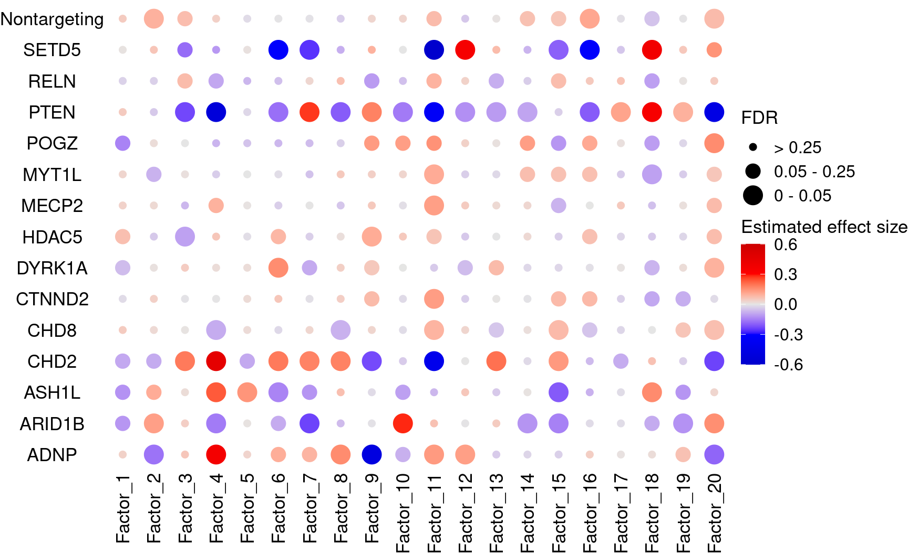
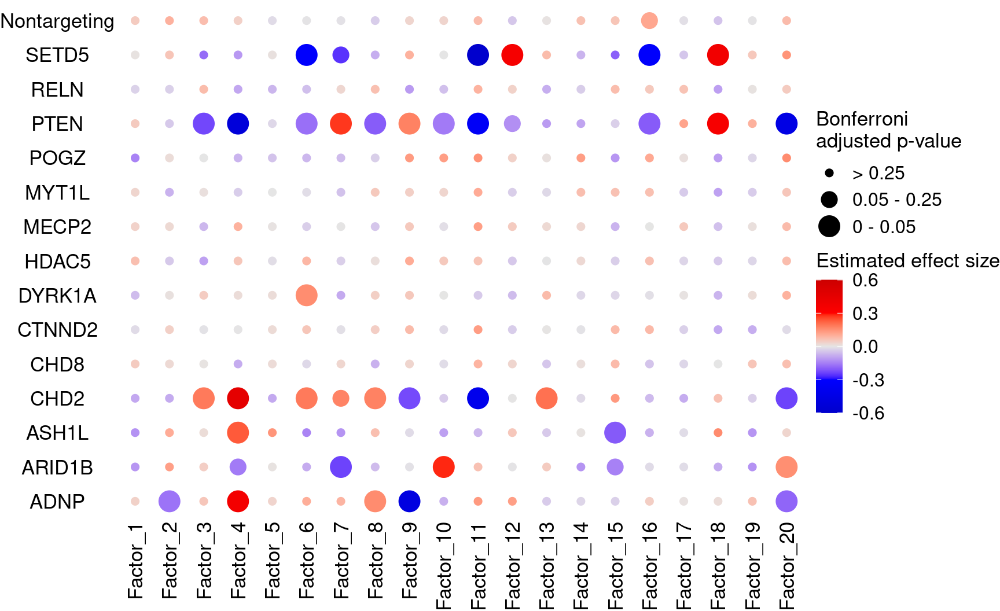
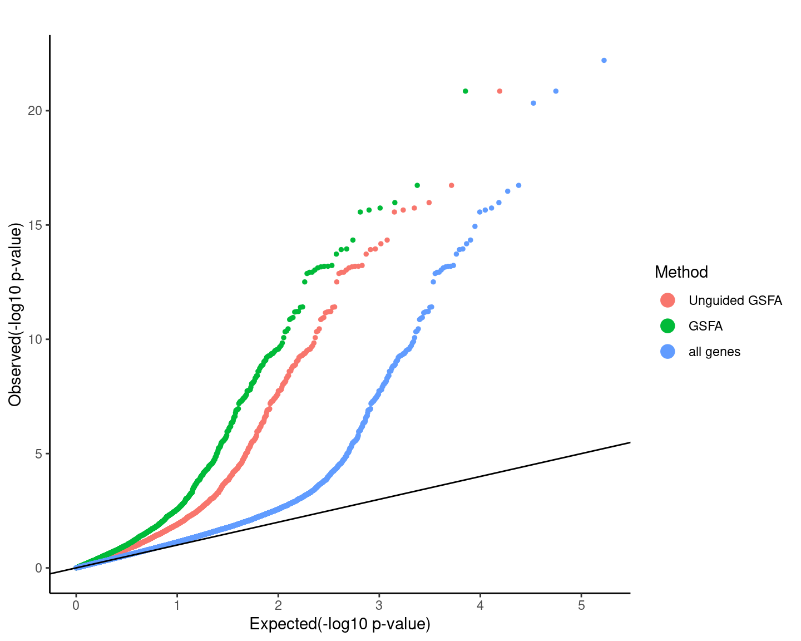
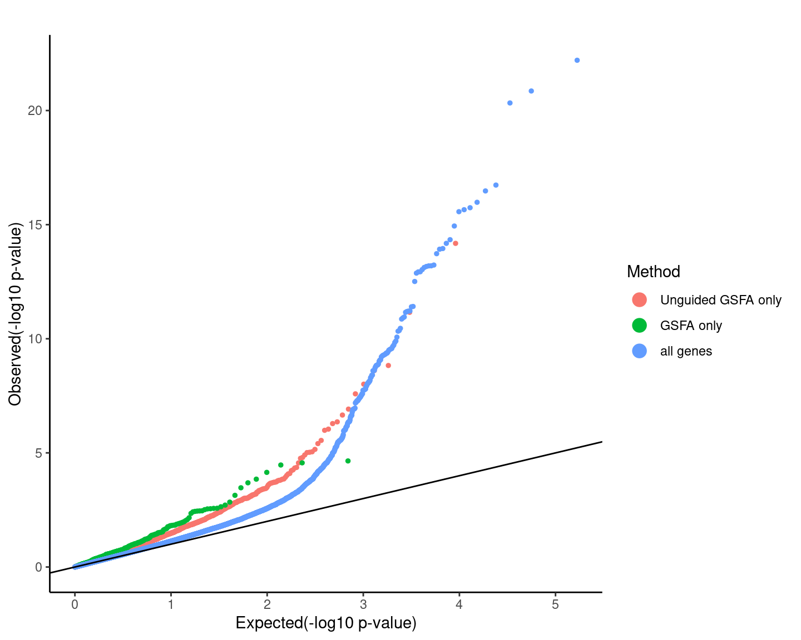

Unguided GSFA analysis on LUHMES CROP-seq data
Kaixuan Luo
2022-08-20
Last updated: 2022-09-01
Checks: 7 0
Knit directory: GSFA_analysis/
This reproducible R Markdown analysis was created with workflowr (version 1.7.0). The Checks tab describes the reproducibility checks that were applied when the results were created. The Past versions tab lists the development history.
Great! Since the R Markdown file has been committed to the Git repository, you know the exact version of the code that produced these results.
Great job! The global environment was empty. Objects defined in the global environment can affect the analysis in your R Markdown file in unknown ways. For reproduciblity it’s best to always run the code in an empty environment.
The command set.seed(20220524) was run prior to running the code in the R Markdown file. Setting a seed ensures that any results that rely on randomness, e.g. subsampling or permutations, are reproducible.
Great job! Recording the operating system, R version, and package versions is critical for reproducibility.
Nice! There were no cached chunks for this analysis, so you can be confident that you successfully produced the results during this run.
Great job! Using relative paths to the files within your workflowr project makes it easier to run your code on other machines.
Great! You are using Git for version control. Tracking code development and connecting the code version to the results is critical for reproducibility.
The results in this page were generated with repository version 4834f30. See the Past versions tab to see a history of the changes made to the R Markdown and HTML files.
Note that you need to be careful to ensure that all relevant files for the analysis have been committed to Git prior to generating the results (you can use wflow_publish or wflow_git_commit). workflowr only checks the R Markdown file, but you know if there are other scripts or data files that it depends on. Below is the status of the Git repository when the results were generated:
Ignored files:
Ignored: .Rhistory
Ignored: .Rproj.user/
Untracked files:
Untracked: Rplots.pdf
Untracked: analysis/check_Tcells_datasets.Rmd
Untracked: analysis/interpret_gsfa_LUHMES.Rmd
Untracked: analysis/interpret_gsfa_TCells.Rmd
Untracked: analysis/spca_LUHMES_data.Rmd
Untracked: analysis/test_seurat.Rmd
Untracked: code/gsfa_negctrl_job.sbatch
Untracked: code/music_LUHMES_Yifan.R
Untracked: code/plotting_functions.R
Untracked: code/run_gsfa_2groups_negctrl.R
Untracked: code/run_gsfa_negctrl.R
Untracked: code/run_music_LUHMES.R
Untracked: code/run_music_LUHMES_data.sbatch
Untracked: code/run_sceptre_LUHMES_data.sbatch
Untracked: code/run_sceptre_Tcells_stimulated_data.sbatch
Untracked: code/run_sceptre_Tcells_unstimulated_data.sbatch
Untracked: code/run_spca_LUHMES.R
Untracked: code/run_spca_TCells.R
Untracked: code/run_unguided_gsfa_LUHMES.R
Untracked: code/run_unguided_gsfa_LUHMES.sbatch
Untracked: code/run_unguided_gsfa_Tcells.R
Untracked: code/run_unguided_gsfa_Tcells.sbatch
Untracked: code/sceptre_LUHMES_data.R
Untracked: code/sceptre_Tcells_stimulated_data.R
Untracked: code/sceptre_Tcells_unstimulated_data.R
Untracked: code/seurat_sim_fpr_tpr.R
Untracked: code/unguided_GFSA_mixture_normal_prior.cpp
Unstaged changes:
Modified: analysis/sceptre_LUHMES_data.Rmd
Modified: analysis/twostep_clustering_LUHMES_data.Rmd
Modified: analysis/unguided_gsfa_Tcells_data.Rmd
Modified: code/run_sceptre_cropseq_data.sbatch
Modified: code/sceptre_analysis.R
Note that any generated files, e.g. HTML, png, CSS, etc., are not included in this status report because it is ok for generated content to have uncommitted changes.
These are the previous versions of the repository in which changes were made to the R Markdown (analysis/unguided_gsfa_LUHMES_data.Rmd) and HTML (docs/unguided_gsfa_LUHMES_data.html) files. If you’ve configured a remote Git repository (see ?wflow_git_remote), click on the hyperlinks in the table below to view the files as they were in that past version.
| File | Version | Author | Date | Message |
|---|---|---|---|---|
| Rmd | 4834f30 | kevinlkx | 2022-09-01 | added QQ plot for GSFA vs MAST |
| html | e70e2ab | kevinlkx | 2022-08-31 | Build site. |
| Rmd | 04f09bd | kevinlkx | 2022-08-31 | added qqplots for combined results |
| html | 8b0d5f1 | kevinlkx | 2022-08-25 | Build site. |
| Rmd | d98fea7 | kevinlkx | 2022-08-25 | plot betas in the dotplots |
| html | 51fd61a | kevinlkx | 2022-08-25 | Build site. |
| Rmd | 7b115b5 | kevinlkx | 2022-08-25 | unguided GSFA res for LUHMES data |
| html | a561ed8 | kevinlkx | 2022-08-25 | Build site. |
| Rmd | 150dbc1 | kevinlkx | 2022-08-25 | unguided GSFA res for LUHMES data |
| html | 2cefbda | kevinlkx | 2022-08-25 | Build site. |
| Rmd | ae5b1ad | kevinlkx | 2022-08-25 | unguided GSFA res for LUHMES data |
mkdir -p /project2/xinhe/kevinluo/GSFA/data
cp /project2/xinhe/yifan/Factor_analysis/LUHMES/processed_data/deviance_residual.merged_top_6k.corrected_4.scaled.rds \
/project2/xinhe/kevinluo/GSFA/unguided_GSFA/LUHMES/processed_data/deviance_residual.merged_top_6k.corrected_4.scaled.rds
cp /project2/xinhe/yifan/Factor_analysis/LUHMES/processed_data/merged_metadata.rds \
/project2/xinhe/kevinluo/GSFA/unguided_GSFA/LUHMES/processed_data/merged_metadata.rdsAnalysis scripts
- R script:
/home/kaixuan/projects/GSFA_analysis/code/run_unguided_gsfa_LUHMES.R
- sbatch script:
/home/kaixuan/projects/GSFA_analysis/code/run_unguided_gsfa_LUHMES.sbatch
mkdir -p /project2/xinhe/kevinluo/GSFA/unguided_GSFA/log
cd /project2/xinhe/kevinluo/GSFA/unguided_GSFA/log
sbatch ~/projects/GSFA_analysis/code/run_unguided_gsfa_LUHMES.sbatchLoad packages
suppressPackageStartupMessages(library(data.table))
suppressPackageStartupMessages(library(Seurat))
suppressPackageStartupMessages(library(ComplexHeatmap))
suppressPackageStartupMessages(library(ggplot2))
require(reshape2)
require(dplyr)
require(ComplexHeatmap)
theme_set(theme_bw() + theme(plot.title = element_text(size = 14, hjust = 0.5),
axis.title = element_text(size = 14),
axis.text = element_text(size = 13),
legend.title = element_text(size = 13),
legend.text = element_text(size = 12),
panel.grid.minor = element_blank())
)
suppressPackageStartupMessages(library(gridExtra))
source("code/plotting_functions.R")Set directories
res_dir <- "/project2/xinhe/kevinluo/GSFA/unguided_GSFA/LUHMES/"
dir.create(res_dir, recursive = TRUE, showWarnings = FALSE)Load unguided GSFA result
fit <- readRDS("/project2/xinhe/kevinluo/GSFA/unguided_GSFA/LUHMES/unguided_gsfa_output/All.gibbs_obj_k20.unguided.svd.seed_14314.light.rds")Load the cell by perturbation matrix.
data_folder <- "/project2/xinhe/kevinluo/GSFA/unguided_GSFA/LUHMES/"
metadata <- readRDS(paste0(data_folder, "processed_data/merged_metadata.rds"))
# Perturbation info:
G_mat <- metadata[, 4:18]
G_mat <- as.matrix(G_mat)
KO_names <- colnames(G_mat)
negctrl_index <- which(KO_names == "Nontargeting")Use linear regression to test for the association between perturbations and factors
Z_pm <- fit$posterior_means$Z_pm
if(!all.equal(rownames(G_mat), rownames(Z_pm))){
stop("Rownames of G_mat do not match with Z_pm!")
}
perturb_matrix <- G_mat
factor_matrix <- Z_pm
summary_df <- expand.grid(colnames(perturb_matrix), colnames(factor_matrix))
colnames(summary_df) <- c("perturb", "factor")
summary_df <- cbind(summary_df, beta = NA, statistic = NA, pval = NA)
for(i in 1:nrow(summary_df)){
df <- data.frame(perturb = perturb_matrix[,summary_df$perturb[i]],
factor = factor_matrix[,summary_df$factor[i]])
lm.res <- lm(factor ~ perturb, data=df)
summary_df[i, ]$beta <- summary(lm.res)$coefficients["perturb",1]
summary_df[i, ]$statistic <- summary(lm.res)$coefficients["perturb",3]
summary_df[i, ]$pval <- summary(lm.res)$coefficients["perturb",4]
}
summary_df$fdr <- p.adjust(summary_df$pval, method = "BH")
summary_df$bonferroni_adj <- p.adjust(summary_df$pval, method = "bonferroni")
saveRDS(summary_df, file = file.path(res_dir, "LUHMES_unguidedGSFA_guide_factor_lm_summary_df.rds"))
stat_mat <- reshape2::dcast(summary_df %>% dplyr::select(perturb, factor, statistic), perturb ~ factor, value.var = "statistic")
rownames(stat_mat) <- stat_mat$perturb
stat_mat$perturb <- NULL
stat_mat <- as.matrix(stat_mat)
beta_mat <- reshape2::dcast(summary_df %>% dplyr::select(perturb, factor, beta), perturb ~ factor, value.var = "beta")
rownames(beta_mat) <- beta_mat$perturb
beta_mat$perturb <- NULL
beta_mat <- as.matrix(beta_mat)
fdr_mat <- reshape2::dcast(summary_df %>% dplyr::select(perturb, factor, fdr), perturb ~ factor, value.var = "fdr")
rownames(fdr_mat) <- fdr_mat$perturb
fdr_mat$perturb <- NULL
fdr_mat <- as.matrix(fdr_mat)
bonferroni_mat <- reshape2::dcast(summary_df %>% dplyr::select(perturb, factor, bonferroni_adj),
perturb ~ factor, value.var = "bonferroni_adj")
rownames(bonferroni_mat) <- bonferroni_mat$perturb
bonferroni_mat$perturb <- NULL
bonferroni_mat <- as.matrix(bonferroni_mat)# pdf(file.path(res_dir, "stat-fdr-dotplot.pdf"), width = 9, height = 5.5)
KO_names <- rownames(fdr_mat)
dotplot_effectsize(t(beta_mat), t(fdr_mat),
reorder_markers = c(KO_names[KO_names!="Nontargeting"], "Nontargeting"),
color_lgd_title = "Estimated effect size",
size_lgd_title = "FDR",
max_score = 0.6,
min_score = -0.6,
by_score = 0.3) + coord_flip()
# dev.off()Plot perturbation ~ cluster associations (show Bonferroni adjusted p-values)
# pdf(file.path(res_dir, "stat-bonferroni-dotplot.pdf"), width = 9, height = 5.5)
KO_names <- rownames(bonferroni_mat)
dotplot_effectsize(t(beta_mat), t(bonferroni_mat),
reorder_markers = c(KO_names[KO_names!="Nontargeting"], "Nontargeting"),
color_lgd_title = "Estimated effect size",
size_lgd_title = "Bonferroni\nadjusted p-value",
max_score = 0.6,
min_score = -0.6,
by_score = 0.3) + coord_flip()
# dev.off()Find DE genes for each factor and assign DE genes to associated perturbations
First, find DE genes for each factor using F matrix (PIP>0.95).
Then, for each perturbation, find the associated factors, and pull the DE genes for those factors.
F_pm <- fit$posterior_means$F_pm
# dim(F_pm)
# feature.names <- data.frame(fread(file.path(data_dir, "LUHMES_GSM4219575_Run1_genes.tsv.gz"),
# header = FALSE), stringsAsFactors = FALSE)
de.genes.factors <- vector("list", length = ncol(F_pm))
names(de.genes.factors) <- colnames(F_pm)
for( i in 1:length(de.genes.factors)){
de_genes <- rownames(F_pm[F_pm[,i] > 0.95,])
# de_genes <- feature.names$V2[match(de_genes, feature.names$V1)]
de.genes.factors[[i]] <- de_genes
}Number of DE genes for each perturbation (FDR < 0.05)
perturb_names <- colnames(perturb_matrix)
perturb_names <- c("Nontargeting", perturb_names[perturb_names!="Nontargeting"])
de.genes.perturbs <- vector("list", length = length(perturb_names))
names(de.genes.perturbs) <- perturb_names
for(i in 1:length(de.genes.perturbs)){
perturb_name <- names(de.genes.perturbs)[i]
associated_factors <- colnames(fdr_mat)[which(fdr_mat[perturb_name, ] < 0.05)]
if(length(associated_factors) > 0){
de.genes.perturbs[[i]] <- unique(unlist(de.genes.factors[associated_factors]))
}
}
num.de.genes.perturbs <- sapply(de.genes.perturbs, length)
unguided_GSFA_fdr0.05_genes <- de.genes.perturbs
dge_plot_df <- data.frame(Perturbation = names(num.de.genes.perturbs), Num_DEGs = num.de.genes.perturbs)
dge_plot_df$Perturbation <- factor(dge_plot_df$Perturbation, levels = names(num.de.genes.perturbs))
# pdf(file.path(res_dir, "count-de-genes.pdf"), width = 13, height = 5)
ggplot(data=dge_plot_df, aes(x = Perturbation, y = Num_DEGs+1)) +
geom_bar(position = "dodge", stat = "identity") +
geom_text(aes(label = Num_DEGs), position=position_dodge(width=0.9), vjust=-0.25) +
scale_y_log10() +
scale_fill_brewer(palette = "Set2") +
labs(x = "Target gene",
y = "Number of DEGs",
title = "Number of DEGs detected by unguided GSFA") +
theme(axis.text.x = element_text(angle = 45, hjust = 1, size = 12),
legend.position = "bottom",
legend.text = element_text(size = 13))
| Version | Author | Date |
|---|---|---|
| 2cefbda | kevinlkx | 2022-08-25 |
# dev.off()Number of DE genes for each perturbation (Bonferroni adjusted p-value < 0.05)
perturb_names <- colnames(perturb_matrix)
perturb_names <- c("Nontargeting", perturb_names[perturb_names!="Nontargeting"])
de.genes.perturbs <- vector("list", length = length(perturb_names))
names(de.genes.perturbs) <- perturb_names
for(i in 1:length(de.genes.perturbs)){
perturb_name <- names(de.genes.perturbs)[i]
associated_factors <- colnames(bonferroni_mat)[which(bonferroni_mat[perturb_name, ] < 0.05)]
if(length(associated_factors) > 0){
de.genes.perturbs[[i]] <- unique(unlist(de.genes.factors[associated_factors]))
}
}
num.de.genes.perturbs <- sapply(de.genes.perturbs, length)
unguided_GSFA_bonferroni0.05_genes <- de.genes.perturbs
dge_plot_df <- data.frame(Perturbation = names(num.de.genes.perturbs), Num_DEGs = num.de.genes.perturbs)
dge_plot_df$Perturbation <- factor(dge_plot_df$Perturbation, levels = names(num.de.genes.perturbs))
ggplot(data=dge_plot_df, aes(x = Perturbation, y = Num_DEGs+1)) +
geom_bar(position = "dodge", stat = "identity") +
geom_text(aes(label = Num_DEGs), position=position_dodge(width=0.9), vjust=-0.25) +
scale_y_log10() +
scale_fill_brewer(palette = "Set2") +
labs(x = "Target gene",
y = "Number of DEGs",
title = "Number of DEGs detected by unguided GSFA") +
theme(axis.text.x = element_text(angle = 45, hjust = 1, size = 12),
legend.position = "bottom",
legend.text = element_text(size = 13))
| Version | Author | Date |
|---|---|---|
| 2cefbda | kevinlkx | 2022-08-25 |
Compare single-gene DE p-value distributions between GSFA and unguided GSFA
fdr_cutoff <- 0.05
lfsr_cutoff <- 0.05Load the output of GSFA fit_gsfa_multivar() run.
data_folder <- "/project2/xinhe/yifan/Factor_analysis/LUHMES/"
fit <- readRDS(paste0(data_folder,
"gsfa_output_detect_01/use_negctrl/All.gibbs_obj_k20.svd_negctrl.seed_14314.light.rds"))
gibbs_PM <- fit$posterior_means
lfsr_mat <- fit$lfsr[, -ncol(fit$lfsr)]
total_effect <- fit$total_effect[, -ncol(fit$total_effect)]
KO_names <- colnames(lfsr_mat)DEGs detected by GSFA
ADNP ARID1B ASH1L CHD2 CHD8 CTNND2
795 310 322 756 0 0
DYRK1A HDAC5 MECP2 MYT1L Nontargeting POGZ
23 0 0 0 0 0
PTEN RELN SETD5
895 0 466 Load MAST single-gene DE result
guides <- KO_names[KO_names!="Nontargeting"]
mast_list <- list()
for (m in guides){
fname <- paste0(data_folder, "processed_data/MAST/dev_top6k_negctrl/gRNA_", m, ".dev_res_top6k.vs_negctrl.rds")
tmp_df <- readRDS(fname)
tmp_df$geneID <- rownames(tmp_df)
tmp_df <- tmp_df %>% dplyr::rename(FDR = fdr, PValue = pval)
mast_list[[m]] <- tmp_df
}
mast_signif_counts <- sapply(mast_list, function(x){filter(x, FDR < fdr_cutoff) %>% nrow()})
# summary(mast_list)QQ-plots of MAST DE p-values for the GSFA genes vs unguided GSFA genes.
qqplots <- list()
for(i in 1:length(guides)){
guide <- guides[i]
mast_res <- mast_list[[guide]]
unguided_gsfa_de_genes <- unguided_GSFA_fdr0.05_genes[[guide]]
gsfa_de_genes <- gsfa_sig_genes[[guide]]
unguided_gsfa_de_genes <- intersect(unguided_gsfa_de_genes, rownames(mast_res))
gsfa_de_genes <- intersect(gsfa_de_genes, rownames(mast_res))
if(length(unguided_gsfa_de_genes)>0 && length(gsfa_de_genes) >0){
cat("plot", guide, "\n")
mast_res$unguided_gsfa_gene <- 0
mast_res[unguided_gsfa_de_genes, ]$unguided_gsfa_gene <- 1
mast_res$gsfa_gene <- 0
mast_res[gsfa_de_genes, ]$gsfa_gene <- 1
pvalue_list <- list('Unguided GSFA'=dplyr::filter(mast_res,unguided_gsfa_gene==1)$PValue,
'GSFA'=dplyr::filter(mast_res,gsfa_gene==1)$PValue,
'MAST'=mast_res$PValue)
qqplots[[guide]] <- qqplot.pvalue(pvalue_list, pointSize = 1, legendSize = 4) +
ggtitle(guide) + theme(plot.title = element_text(hjust = 0.5))
}
}
grid.arrange(grobs = qqplots, nrow = 4, ncol = 2)
| Version | Author | Date |
|---|---|---|
| 2cefbda | kevinlkx | 2022-08-25 |
plot ADNP
plot ARID1B
plot ASH1L
plot CHD2
plot DYRK1A
plot PTEN
plot SETD5 Pooling p-values from all perturbations
combined_mast_res <- data.frame()
for(i in 1:length(guides)){
guide <- guides[i]
mast_res <- mast_list[[guide]]
unguided_gsfa_de_genes <- unguided_GSFA_fdr0.05_genes[[guide]]
gsfa_de_genes <- gsfa_sig_genes[[guide]]
unguided_gsfa_de_genes <- intersect(unguided_gsfa_de_genes, rownames(mast_res))
gsfa_de_genes <- intersect(gsfa_de_genes, rownames(mast_res))
mast_res$unguided_gsfa_gene <- 0
if(length(unguided_gsfa_de_genes) >0){
mast_res[unguided_gsfa_de_genes, ]$unguided_gsfa_gene <- 1
}
mast_res$gsfa_gene <- 0
if(length(gsfa_de_genes) >0){
mast_res[gsfa_de_genes, ]$gsfa_gene <- 1
}
combined_mast_res <- rbind(combined_mast_res, mast_res)
}
pvalue_list <- list('Unguided GSFA'=dplyr::filter(combined_mast_res,unguided_gsfa_gene==1)$PValue,
'GSFA'=dplyr::filter(combined_mast_res,gsfa_gene==1)$PValue,
'MAST'=combined_mast_res$PValue)
# pdf(file.path(res_dir, "qqplot_all_combined.pdf"))
qqplot.pvalue(pvalue_list, pointSize = 1, legendSize = 4) +
ggtitle("All perturbations") + theme(plot.title = element_text(hjust = 0.5)) +
scale_colour_discrete(name="Method")
| Version | Author | Date |
|---|---|---|
| e70e2ab | kevinlkx | 2022-08-31 |
# dev.off()QQ-plots of MAST DE p-values for the GSFA only genes vs two-step only genes.
qqplots <- list()
for(i in 1:length(guides)){
guide <- guides[i]
mast_res <- mast_list[[guide]]
unguided_gsfa_de_genes <- unguided_GSFA_fdr0.05_genes[[guide]]
gsfa_de_genes <- gsfa_sig_genes[[guide]]
unguided_gsfa_de_genes <- intersect(unguided_gsfa_de_genes, rownames(mast_res))
gsfa_de_genes <- intersect(gsfa_de_genes, rownames(mast_res))
if(length(unguided_gsfa_de_genes)>0 && length(gsfa_de_genes) >0){
cat("plot", guide, "\n")
mast_res$unguided_gsfa_only_gene <- 0
mast_res[setdiff(unguided_gsfa_de_genes, gsfa_de_genes), ]$unguided_gsfa_only_gene <- 1
mast_res$gsfa_only_gene <- 0
mast_res[setdiff(gsfa_de_genes, unguided_gsfa_de_genes), ]$gsfa_only_gene <- 1
pvalue_list <- list('Unguided GSFA only'=dplyr::filter(mast_res,unguided_gsfa_only_gene==1)$PValue,
'GSFA only'=dplyr::filter(mast_res,gsfa_only_gene==1)$PValue,
'MAST'=mast_res$PValue)
qqplots[[guide]] <- qqplot.pvalue(pvalue_list, pointSize = 1, legendSize = 4) +
ggtitle(guide) + theme(plot.title = element_text(hjust = 0.5))
}
}
grid.arrange(grobs = qqplots, nrow = 4, ncol = 2)
| Version | Author | Date |
|---|---|---|
| 2cefbda | kevinlkx | 2022-08-25 |
plot ADNP
plot ARID1B
plot ASH1L
plot CHD2
plot DYRK1A
plot PTEN
plot SETD5 Pooling p-values from all perturbations
combined_mast_res <- data.frame()
for(i in 1:length(guides)){
guide <- guides[i]
mast_res <- mast_list[[guide]]
unguided_gsfa_de_genes <- unguided_GSFA_fdr0.05_genes[[guide]]
gsfa_de_genes <- gsfa_sig_genes[[guide]]
unguided_gsfa_de_genes <- intersect(unguided_gsfa_de_genes, rownames(mast_res))
gsfa_de_genes <- intersect(gsfa_de_genes, rownames(mast_res))
mast_res$unguided_gsfa_only_gene <- 0
if(length(setdiff(unguided_gsfa_de_genes, gsfa_de_genes)) >0){
mast_res[setdiff(unguided_gsfa_de_genes, gsfa_de_genes), ]$unguided_gsfa_only_gene <- 1
}
mast_res$gsfa_only_gene <- 0
if(length(setdiff(gsfa_de_genes, unguided_gsfa_de_genes)) >0){
mast_res[setdiff(gsfa_de_genes, unguided_gsfa_de_genes), ]$gsfa_only_gene <- 1
}
combined_mast_res <- rbind(combined_mast_res, mast_res)
}
pvalue_list <- list('Unguided GSFA only'=dplyr::filter(combined_mast_res,unguided_gsfa_only_gene==1)$PValue,
'GSFA only'=dplyr::filter(combined_mast_res,gsfa_only_gene==1)$PValue,
'MAST'=combined_mast_res$PValue)
# pdf(file.path(res_dir, "qqplot_only_combined.pdf"))
qqplot.pvalue(pvalue_list, pointSize = 1, legendSize = 4) +
ggtitle("All perturbations") + theme(plot.title = element_text(hjust = 0.5)) +
scale_colour_discrete(name="Method")
| Version | Author | Date |
|---|---|---|
| e70e2ab | kevinlkx | 2022-08-31 |
# dev.off()QQ plots comparing GSFA with MAST
combined_mast_res <- data.frame()
for(i in 1:length(guides)){
guide <- guides[i]
mast_res <- mast_list[[guide]]
gsfa_de_genes <- gsfa_sig_genes[[guide]]
gsfa_de_genes <- intersect(gsfa_de_genes, rownames(mast_res))
mast_res$gsfa_gene <- 0
if(length(gsfa_de_genes) >0){
mast_res[gsfa_de_genes, ]$gsfa_gene <- 1
}
combined_mast_res <- rbind(combined_mast_res, mast_res)
}
pvalue_list <- list('GSFA'=dplyr::filter(combined_mast_res,gsfa_gene==1)$PValue,
'MAST'=combined_mast_res$PValue)
qqplot.pvalue(pvalue_list, pointSize = 1, legendSize = 4) +
ggtitle("All perturbations") + theme(plot.title = element_text(hjust = 0.5)) +
scale_colour_discrete(name="Method")
sessionInfo()R version 4.0.4 (2021-02-15)
Platform: x86_64-pc-linux-gnu (64-bit)
Running under: Scientific Linux 7.4 (Nitrogen)
Matrix products: default
BLAS/LAPACK: /software/openblas-0.3.13-el7-x86_64/lib/libopenblas_haswellp-r0.3.13.so
locale:
[1] LC_CTYPE=en_US.UTF-8 LC_NUMERIC=C
[3] LC_TIME=en_US.UTF-8 LC_COLLATE=en_US.UTF-8
[5] LC_MONETARY=en_US.UTF-8 LC_MESSAGES=en_US.UTF-8
[7] LC_PAPER=en_US.UTF-8 LC_NAME=C
[9] LC_ADDRESS=C LC_TELEPHONE=C
[11] LC_MEASUREMENT=en_US.UTF-8 LC_IDENTIFICATION=C
attached base packages:
[1] grid stats graphics grDevices utils datasets methods
[8] base
other attached packages:
[1] lattice_0.20-45 gridExtra_2.3 dplyr_1.0.8
[4] reshape2_1.4.4 ggplot2_3.3.5 ComplexHeatmap_2.6.2
[7] SeuratObject_4.0.4 Seurat_4.1.0 data.table_1.14.2
[10] workflowr_1.7.0
loaded via a namespace (and not attached):
[1] Rtsne_0.15 colorspace_2.0-3 rjson_0.2.21
[4] deldir_1.0-6 ellipsis_0.3.2 ggridges_0.5.3
[7] rprojroot_2.0.2 circlize_0.4.15 GlobalOptions_0.1.2
[10] fs_1.5.2 clue_0.3-60 rstudioapi_0.13
[13] spatstat.data_2.1-2 farver_2.1.1 leiden_0.3.9
[16] listenv_0.8.0 ggrepel_0.9.1 fansi_1.0.3
[19] codetools_0.2-18 splines_4.0.4 knitr_1.38
[22] polyclip_1.10-0 jsonlite_1.8.0 Cairo_1.6-0
[25] ica_1.0-2 cluster_2.1.3 png_0.1-7
[28] uwot_0.1.11 shiny_1.7.1 sctransform_0.3.3
[31] spatstat.sparse_2.1-0 compiler_4.0.4 httr_1.4.2
[34] assertthat_0.2.1 Matrix_1.4-1 fastmap_1.1.0
[37] lazyeval_0.2.2 cli_3.3.0 later_1.3.0
[40] htmltools_0.5.3 tools_4.0.4 igraph_1.3.4
[43] gtable_0.3.0 glue_1.6.2 RANN_2.6.1
[46] Rcpp_1.0.9 scattermore_0.7 jquerylib_0.1.4
[49] vctrs_0.4.1 nlme_3.1-159 lmtest_0.9-40
[52] spatstat.random_2.1-0 xfun_0.30 stringr_1.4.0
[55] globals_0.16.0 ps_1.7.1 mime_0.12
[58] miniUI_0.1.1.1 lifecycle_1.0.1 irlba_2.3.5
[61] goftest_1.2-3 future_1.24.0 getPass_0.2-2
[64] MASS_7.3-58.1 zoo_1.8-9 scales_1.2.0
[67] spatstat.core_2.4-0 promises_1.2.0.1 spatstat.utils_2.3-0
[70] parallel_4.0.4 RColorBrewer_1.1-3 yaml_2.3.5
[73] reticulate_1.25 pbapply_1.5-0 sass_0.4.1
[76] rpart_4.1-15 stringi_1.7.6 highr_0.9
[79] S4Vectors_0.28.1 BiocGenerics_0.36.1 shape_1.4.6
[82] rlang_1.0.4 pkgconfig_2.0.3 matrixStats_0.62.0
[85] evaluate_0.16 ROCR_1.0-11 purrr_0.3.4
[88] tensor_1.5 labeling_0.4.2 patchwork_1.1.1
[91] htmlwidgets_1.5.4 cowplot_1.1.1 processx_3.5.3
[94] tidyselect_1.1.2 parallelly_1.32.1 RcppAnnoy_0.0.19
[97] plyr_1.8.6 magrittr_2.0.3 R6_2.5.1
[100] IRanges_2.24.1 generics_0.1.3 DBI_1.1.3
[103] withr_2.5.0 mgcv_1.8-39 pillar_1.8.0
[106] whisker_0.4 fitdistrplus_1.1-8 survival_3.3-1
[109] abind_1.4-5 tibble_3.1.6 future.apply_1.8.1
[112] crayon_1.5.1 KernSmooth_2.23-20 utf8_1.2.2
[115] spatstat.geom_2.3-2 plotly_4.10.0 rmarkdown_2.13
[118] GetoptLong_1.0.5 callr_3.7.0 git2r_0.30.1
[121] digest_0.6.29 xtable_1.8-4 tidyr_1.2.0
[124] httpuv_1.6.5 stats4_4.0.4 munsell_0.5.0
[127] viridisLite_0.4.0 bslib_0.3.1